1 安装准备:
/opt/app/oracle/product/19.3.000/db_home/LINUX.X64_193000_db_home.zip
(一定要放在这里!!!)
centos 7.9、Xmanager Enterprise 5、zysong.ttf（字体）、oracle12c：
文件解压：/run/media
/catalyst/IBBWORK/toolsbak/oracle19c
yum install xorg-x11-fonts* （字体）
2.系统要求
官方建议内存空间至少1G，交换分区应为内存空间2倍以上
说明：通常Swap空间的大小应是物理内存的2-2.5倍，特别是数据库 服务器和Web服务器，随着访问量的增加，对Swap空间的要求也会增加
2.1.查看磁盘大小
(base) [catalyst@localhost ~]$ df -h
Filesystem
Size Used Avail Use% Mounted on
devtmpfs
12G 0
12G 0% /dev
tmpfs
12G 128K 12G 1%
/dev/shm
tmpfs
12G 11M 12G 1%
/run
tmpfs
12G
0 12G 0%
/sys/fs/cgroup
/dev/mapper/centos-root 336G
66G 270G 20% /
/dev/sdb
412G 65G 326G 17% /DATABAK
/dev/sda1
950M 244M 707M 26% /boot
/dev/mapper/centos-home 94G
3.4G 90G 4% /home
tmpfs
2.4G 64K 2.4G 1%
/run/user/1000
/dev/sdd1
1.9T 894G 970G 48%
/run/media/catalyst/officegyh
tmpfs
2.4G 0
2.4G 0% /run/user/0
(base) [catalyst@localhost ~]$
2.2. 查看交换分区大小
若不满足，需要修改交换分区大小
(base) [catalyst@localhost ~]$ free -m
total
used
free
shared buff/cache available
Mem:
23884
2674
16680
77
4529 20768
Swap:
46719
0 46719
3.关闭防火墙以及Selinux: Active: inactive (dead)
(base) [catalyst@localhost ~]$ systemctl stop
firewalld.service
(base) [catalyst@localhost ~]$ systemctl status
firewalld.service
● firewalld.service - firewalld - dynamic firewall
daemon
Loaded: loaded
(/usr/lib/systemd/system/firewalld.service; enabled;
vendor preset: enabled)
Active: inactive (dead) since Sun
2022-07-17 10:06:19 CST; 21s ago
Docs: man:firewalld(1)
Process: 1076 ExecStart=/usr/sbin/firewalld
--nofork --nopid $FIREWALLD_ARGS (code=exited,
status=0/SUCCESS)
Main PID: 1076 (code=exited, status=0/SUCCESS)
//egrep "SELINUX=enforcing"
/etc/selinux/config ===> SELINUX=enforcing
//systemctl disable firewalld.service
禁止防火墙启动
//systemctl status firewalld.service
or: vi /etc/selinux/config
SELINUX=disabled
#直接关闭selinux //or: sed
-i s#SELINUX=enforcing#SELINUX=disabled#g
/etc/selinux/config => egrep
"SELINUX=disabled" /etc/selinux/config
setenforce 0///?????????
4.yum 安装必要安装包
yum install gcc gcc-c++
(对于biohustdb需要安装这个)
yum install binutils compat-libcap1
compat-libstdc++ dtrace-modules
dtrace-modules-headers
dtrace-modules-provider-headers dtrace-utils
elfutils-libelf elfutils-libelf-devel
fontconfig-devel glibc glibc-devel ksh libaio
libaio-devel libdtrace-ctf-devel libX11 libXau libXi
libXtst libXrender libXrender-devel libgcc
librdmacm-devel libstdc++ libstdc++-devel libxcb
///////atalyst]# yum install compat-libcapl UnixOD
///yum install libstdc++ libstdc++-devel make
sysstat unixODBC unixODBC-devel
yum install binutils.x86_64 compat-libcap1.x86_64
gcc.x86_64 gcc-c.x86_64 glibc.i686 glibc.x86_64
glibc-devel.i686 glibc-devel.x86_64 ksh
compat-libstdc-33 libaio.i686 libaio.x86_64
libaio-devel.i686 libaio-devel.x86_64 libgcc.i686
libgcc.x86_64 libstdc.i686 libstdc.x86_64
libstdc-devel.i686 libstdc-devel.x86_64 libXi.i686
libXi.x86_64 libXtst.i686 libXtst.x86_64 make.x86_64
sysstat.x86_64 zip unzip
oracle 安装时先决条件检查会检测下面是否安装完成
下载 compat-libstdc++-33-3.2.3-72.el7.x86_64.rpm
#yum install compat-libstdc++-33-3.2.3-72.el7.x86_64 (对于biohustdb需要安装这个)
5. 调整系统内核参数
vi /etc/sysctl.conf fs.aio-max-nr = 1048576#异步IO请求数目 推荐值是：1048576 其实它等于 1024*1024 也就是 1024K 个fs.file-max = 681574446053680#打开的文件句柄的最大数量,防止文件描述符耗尽的问题#共享内存总量 页为单位,内存除以4K所得 kernel.shmall =#单个共享内存段的最大值 kernel.shmmax = 8589934592 # 1/2物理内存大小 #共享内存段的最小数量缺省值4096 kernel.shmmni = 4096 kernel.sem = 250 32000 100 128 #SEMMSL: 每个信号集的最大信号数量 ,（Oracle建议其值不少于100.） #SEMMNS：用于控制整个 Linux 系统中信号的最大数 #SEMOPM： 内核参数用于控制每个 semop 系统调用可以执行的信号操作的数量 （Oracle建议其值不少于100.） #SEMMNI ：内核参数用于控制整个 Linux 系统中信号集的最大数量（Oracle建议其值不少于100.） #用于向外连接的端口范围 net.ipv4.ip_local_port_range = 9000 65500 #套接字接收缓冲区大小的缺省值 net.core.rmem_default = 262144 #套接字接收缓冲区大小的最大值 net.core.rmem_max = 4194304 #套接字发送缓冲区大小的缺省值 net.core.wmem_default = 262144 #套接字发送缓冲区大小的最大值 net.core.wmem_max = 1048576 # 以上保存后：#sysctl -p#加载配置文件
1）kernel.shmall:共享内存页数的最大值
Linux共享内存页大小为4KB,共享内存段的大小都是共享内存页大小的整数倍。一个共享内存段的最大值可设
为16G，如16G内存，则对应需要共享内存页数为16GB/4KB=16777216KB
/4k（getconfPAGESIZE可得到）= 4194304（页）
2) kernel.shmmax:单个共享内存段的最大值
Shmma设置应足够大，设置过低可能导致需要创建多个共享内存段，导致系统性能下降，一般情况下，设置最大共
享内存为物理内存的一半，如物理内存是2G,则可以设置最大共享内存为110241024*1024
= 1073741824，以此类推， kernel.shmmax= 8589934592
kernel.shmall=4194304
6. 用户及安装目录配置
6.1. 新建oinstall,dba,oper组
groupadd oinstall #添加组 groupadd dba #添加组 groupadd oper #添加组 ///////useradd -g oinstall -G dba,oper admin(not use this, just use admin !!!!!! for biohustdb) ///////passwd oracle #修改主机oracle用户的密码 默认123456-G用户组，用户组 指定用户所属的附加组。
root]# usermod -G dba,oper admin //-g用户组 指定用户所属的用户组。
root]# usermod -g oinstall admin //
chmod -g -s /opt/app/oracle
将以下内容添加到/etc/security/limits.conf 中。该内容是Oracle用户的一些限制
admin soft nproc 2047 //single user can use process number
admin hard nproc 16384
admin soft nofile 1024 //user can open file number
admin hard nofile 65536
admin soft stack 10240 //set stack
6.2. 新建目录
mkdir -p /opt/app/oracle/product/19.3.000/db_home
mkdir -p /opt/app/oraInventory
unzip /opt/LINUX.X64_193000_db_home.zip -d
/opt/app/oracle/product/19.3.000/db_home/
(命令行将压缩包解压到目标目录中)
cd /opt/app/oracle/product/19.3.000/db_home
chown -R admin:oinstall /opt/app/oracle
chown -R admin:oinstall
/opt/app/oracle/product/19.3.000/db_home
chmod -R 775 /opt/app/oracle //修改oracle目录的权限
chown -R admin:oinstall /opt/app/oraInventory
chown -R admin:oinstall /opt/app/
//修改目录的属主，属组
7.Oracle 用户环境配置
7.1.
修改oracle环境变量
vi /home/admin/.bash_profile #权限（反码）
umask 022
#oracle的BASE目录定义
ORACLE_BASE=/opt/app/oracle
#oracle的HOME目录定义
ORACLE_HOME=/opt/app/oracle/product/19.3.000/dbhome/
#设置SID
ORACLE_SID=biohustdb
ORACLE_UNQNAME=biohustdb
NLS_DATE_FORMAT="YYYY:MM:DDHH24:MI:SS"
#简体中文版
NLS_LANG="SIMPLIFIED CHINESE_CHINA".UTF8
export TNS_ADMIN=$ORACLE_HOME/network/admin
export ORA_NLS11=$ORACLE_HOME/nls/data
#重新定义系统环境变量
PATH=$PATH:$HOME/.local/bin:$HOME/bin:$ORACLE_HOME/bin
#定义语系
LANG=zh_CN.UTF-8
#导入系统变量
export PATH LANG NLS_DATE_FORMAT NLS_LANG ORACLE_BASE ORACLE_HOME ORACLE_SID ORACLE_UNQNAME
export LD_LIBRARY_PATH=$LD_LIBRARY_PATH:$ORACLE_HOME/lib:$ORACLE_HOME/oracm/lib:/lib:/usr/lib:/usr/lib64
export CLASSPATH=$ORACLE_HOME/jlib:$ORACLE_HOME/rdbms/jlib:$ORACLE_HOME/network/jlib
# User specific environment and startup programs
PATH=$PATH:$HOME/.local/bin:$HOME/bin******************************************************************above is ZH-CN not use!!!need zysong.ttf!!!!!!fuck
just use US LANG install!!!!!!!!!!!!!!!!!!!!!!!!!
添加防火墙
# # firewall-cmd --zone=public --add-port=1521/tcp --add-port=5500/tcp --add-port=5520/tcp --add-port=3938/tcp --permanent
# firewall-cmd --reload //success both!!!!!
source /home/admin/.bash_profile
7.2. 修改pam_limits认证模块
admin用户资源限制使用pam_limits认证模块
su - root
vi /etc/pam.d/login
#在内容末尾添加以下两行数据
session required /lib/security/pam_limits.so
session required pam_limits.so
7.3.
编辑limits.conf配置
vi /etc/security/limits.conf
#在内容末尾添加以下数据
#单用户可使用的进程数量
admin soft nproc 2047
admin hard nproc 16384
#用户可打开的文件数量
admin soft nofile 1024
admin hard nofile 65536
#堆栈设置
admin soft stack 10240
7.4.
编辑profile文件
vi /etc/profile
# 在内容末尾添加以下语句
if [ $USER = "admin" ]
then
if [ $SHELL = "/bin/ksh" ]
then
ulimit -p 16384 #缓冲区大小
ulimit -n 65536
else
ulimit -u 16384 -n 65536 #进程数 文件数
fi
fi
source /etc/profile #使配置生效
8.开始安装
9.install:
[oracle@localhost oracal12cdatabase]$ source
~/.bash_profile //一定要这步，不然报： Minimum
requirements were not met for this environment
echo $LANG
admin用户下默认字 符集LANG=zh_CN.UTF-8(or use: en_US.UTF-8)
./runinstaller
9.1.安装选
项： 创建并配置单实例数据库, 选 第一 item:
中文版的界面：
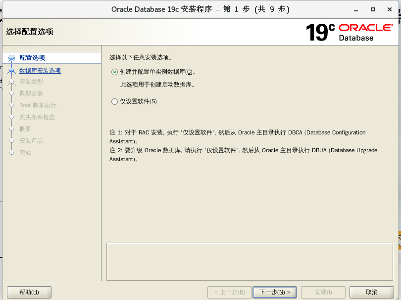
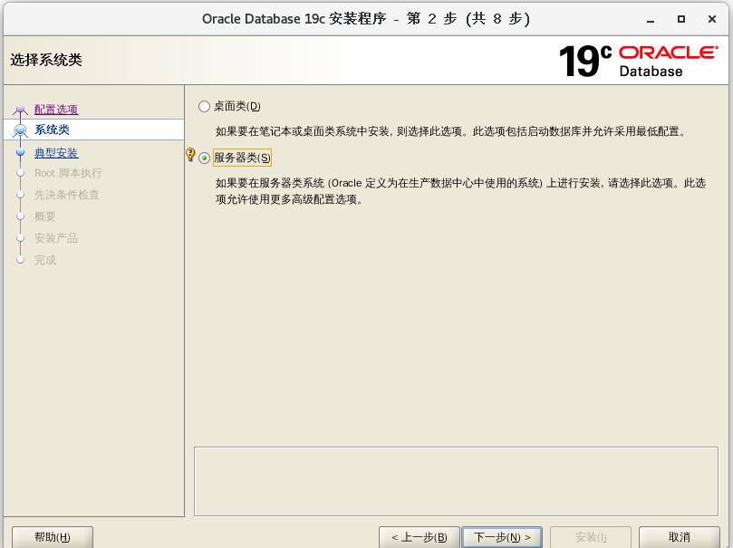
现在选：
now 这里选择企业版(for biohustdb)
安装位置, 安装位置默认即可
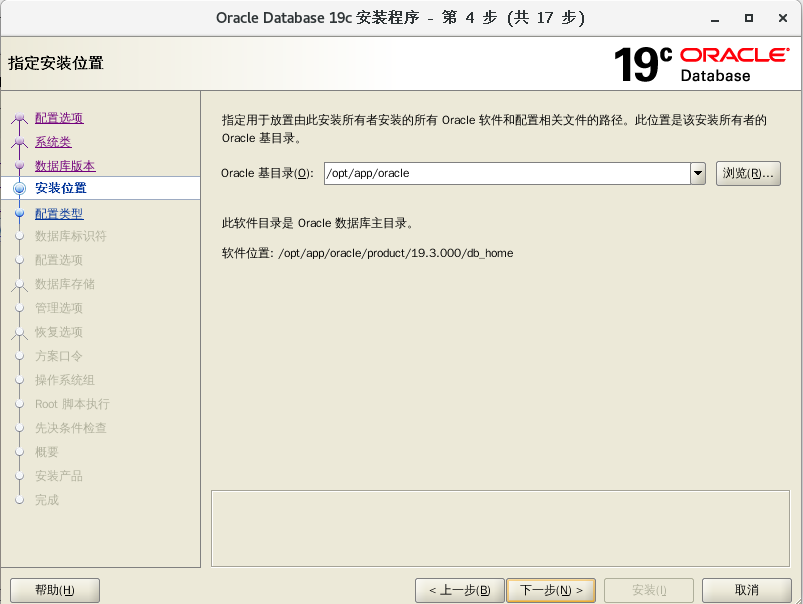
如果是第一次安装:会提示 产品清单目录:
/opt/app/oraInventory
类型配置, 常规即可
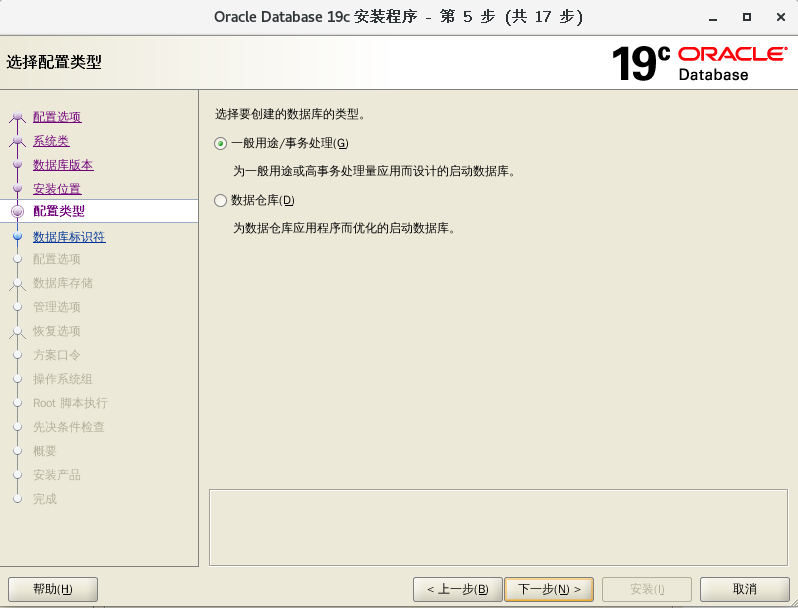
数据库标识符配置, 这个取消候选创建容器数据库，一般用不到。
GLOBAL ID:biohustdb
SID: biohustdb
可插入数据库名：biodbpdb
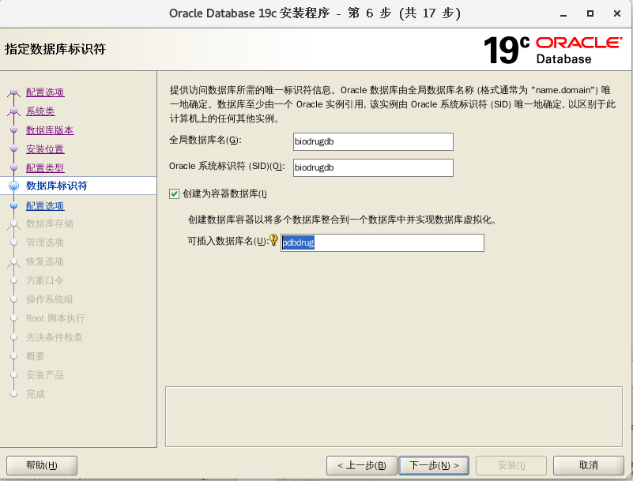
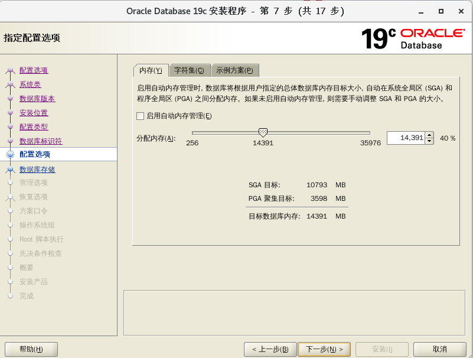
字符集 AL32UTF-8(U)
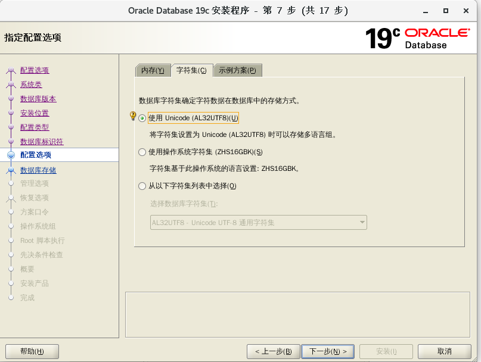
next:
软件存放目录，之前预设好的
数据存储的位置
默认 文件系统: /opt/app/oracle/oradata
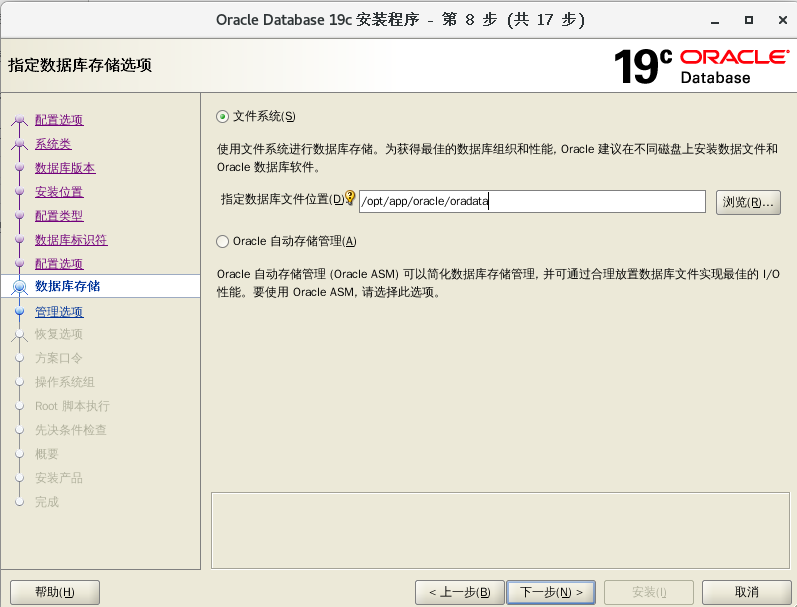
管理选项配置
如想用云端控制台的可配置这里。
默认下一步
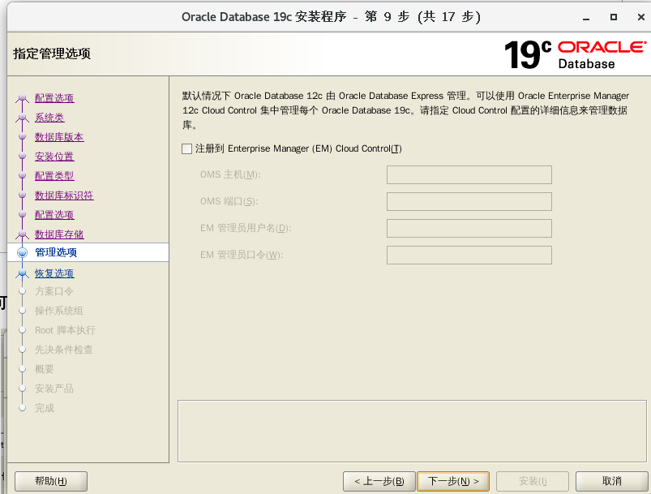
恢复选项配置
设置后，后面出现问题可进行数据恢复，不过会占用很多资源。
对于biohustdb: 选中这项: 文件系统 改为:
/home/admin/recovery_area
//因报空间不够所以另选一个目录: mkdir -p
/home/admin/recovery_area
方案口令配置
推荐大小写字母+数字，不要包含特殊字符 biodb123
(for all users)
请根据安装方式以及物理内存大小配置内存参数。在该页面中默认选择典型配置，仅需要调整内存大小即可

配置操作系统组
这里也是直接选择默认即可（不要用： oper !）
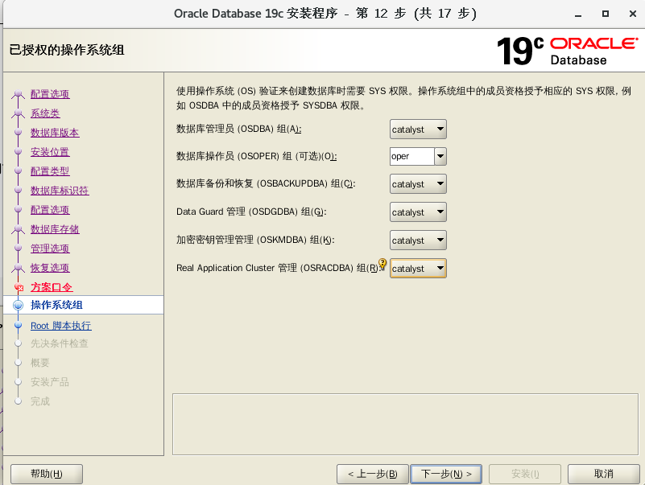
next:
18) root 脚本执行权限配置
root 用户信息配置
输入 root 用户的密码: 123456 (gongchengshixun) 后面自动执行
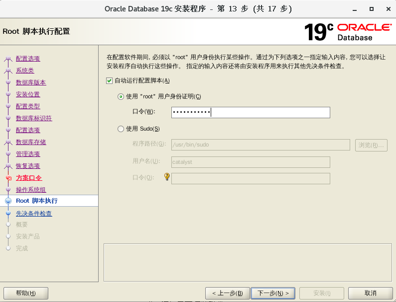
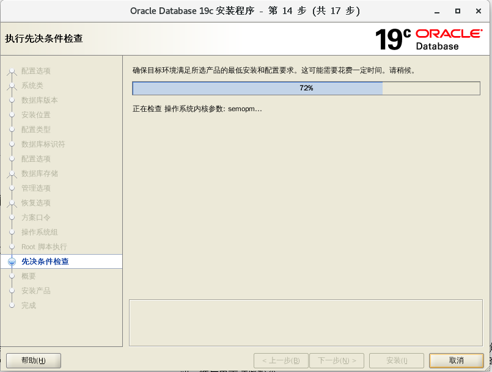
如果报错说:
组成员资格问题: admin
点确定即可消除:
如果报交换分区不够,
需要修改修改swap分区大小:
[root@PC201-10-002 admin]# dd if=/dev/zero
of=/swap1 bs=1M count=16384
记录了16384+0 的读入
记录了16384+0 的写出
17179869184字节(17 GB)已复制，133.069 秒，129 MB/秒
[root@PC201-10-002 admin]# mkswap /swap1
正在设置交换空间版本 1，大小 = 16777212 KiB
无标签，UUID=ec010222-8f59-4b6a-bc56-97075b7ef127
[root@PC201-10-002 admin]#
swapon: /swap1：不安全的权限 0644，建议使用 0600。
[root@PC201-10-002 admin]# free -h
total used free shared buff/cache available
Mem: 15G 2.6G 219M 147M 12G 12G
Swap: 23G 0B 23G
free -h查看swap已增加，但这只是临时性的，如果机器重启会失效
6. 设置开机自动挂载
(现在所有问题都解决了!!!!!!!!!!)vi /etc/fstab最后一行添加/swap1 swap swap defaults 0 0
现在ok
19) 安装检查 shmall: => 4605368
[root@localhost db_home]# vi
/etc/sysctl.conf shmall
mod to => 4605368
[root@localhost db_home]# sysctl -p
summary set
软性限制: 最大堆栈大小 - 此先决条件测试最大堆栈大小的软性限制是否设置正确。
详细资料:
- PRVG-0449 : 在节点 "localhost" 上找不到最大堆栈大小的相应软性限制 [预期 >= "10240"; 找到 = "8192"]。
- 原因: 集群验证实用程序确定在所指示节点上的 所指示软性限制设置不符合 Oracle 提出的适当操作建议。
- 操作: 修改资源限制以满足要求并接受操作系统 特定的度量, 以确保先使更正的值 对于当前用户生效, 然后再重试此检查
20) 开始安装 点安装即可
安装过程中 需要收到自动执行脚本提示：
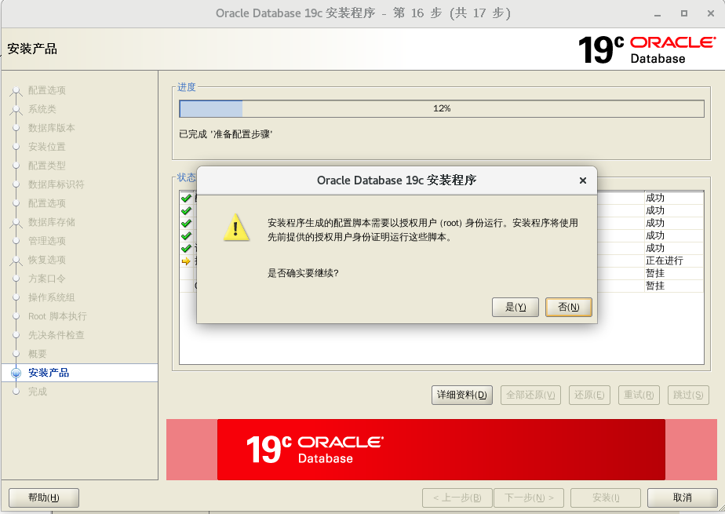
自动搞完即可!!!!!
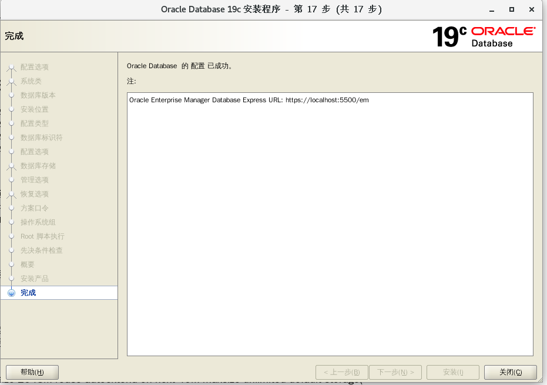
Oracle Enterprise Manager Database Express URL: https://PC201-10-002:5500/em (19.3不需要flash!)
3 启动服务
#cd /opt/app/oracle/product/19.3.000/db_home/bin
#lsnrctl start
#sqlplus /nolog
#connect /as sysdba
#startup
SQL> startup
当启动数据库或者创建数据库时都可能出现ORA-27125错误，我在CENTOS 7.9上
安装Oracle 19.3.000，startup时就遇到了这个错误
ORA-27125: unable to create shared memory segment
Linux-x86_64 Error: 28: No space left on
device //
经查，该错误是由于无法分配共享内存段引起！！
Additional information: 3822
Additional information: 11307843584
#free -h 发现系统的可用内存很多
#df -h 发现tempfs系统相关挂载点 也有很多的空间；
#ipcs -l 发现
最大段数 = 4096
最大段大小 (千字节) = 18421472
最大总共享内存 (千字节) = 18421472
最小段大小 (字节) = 1
[root@localhost bin]# ipcs -u
---------- 共享内存状态 ------------
段已分配 49
页已分配 2792980
页驻留 2780899
页交换 0
# vi /etc/sysctl.conf
kernel.shmall = 46053680 //mod
here!!!!!!!!!!!!!!
SQL> startup
//again !!!!!!!!!!!!!
ORACLE 例程已经启动。
Total System Global Area 1.1341E+10 bytes
Fixed Size
12343896 bytes
Variable Size
2013267368 bytes
Database Buffers 9294577664
bytes
Redo Buffers
21209088 bytes
数据库装载完毕。
数据库已经打开。
now ok!!
创建用户并分配权限
SQL>create user c##biodbuser
identified by biodb123; no
@# for oracle 19.3 (对于oracle
19.3不需要commit;
就可以在myeclipse中refresh看到用户模式了！！！！！！sure)
alter user c##biodbuser identified by
biodb123; //可以改用户 密码
SQL>grant connect,resource,dba to c##biodbuser;
SQL>conn
c##biodbuser/biodb123@biohustdb; //一
定要这样，不然就把表建到SYS模式下了！！！！！！！！！！！！！！！
CREATE TABLE "C##BIODBUSER"."BIODBUSER"( STD_ID
NUMBER NOT NULL, STD_NAME VARCHAR2(100) NOT NULL,
STD_NUM VARCHAR2(50) NOT NULL,STD_MAJOR VARCHAR2(50)
NOT NULL, STD_PASSWORD VARCHAR2(200), STD_RECORDS
NUMBER NOT NULL);
INSERT INTO "C##BIODBUSER"."BIODBUSER"
VALUES('2021002','李子晨','U202112156','生物信息学202101班','U202112156','1000');
INSERT INTO "C##BIODBUSER"."BIODBUSER"
VALUES('2021003','LIZICHEN','U202112157','生物信息学202101班
','U202112157','1000');
INSERT INTO "C##BIODBUSER"."BIODBUSER"
VALUES('2021004','Chlizi','U202112158','生物信息学202101班
','U202112158','1000');
现在就有表位于： c##biodbuser 模 式下了！！！！！！！！！！！！！！！！！！！！
select "STD_ID", "STD_NAME",
"STD_NUM", "STD_MAJOR", "STD_PASSWORD",
"STD_RECORDS" from "C##BIODBUSER"."BIODBUSER" where
STD_NAME='LIZICHEN';
//WHERE NOT USE: " BUT '
使用plsql连接
这就表示成功!!!
接下来你可以尽情玩耍啦!!!
create tablespace biodrugdb datafile '/opt/app/oracle/oradata/DRUGDB/biodrugdb.dbf'
size 2048M reuse autoextend on next 40M maxsize
unlimited default storage(
initial 128k next 128k minextents 2 maxextents
unlimited);
---rename
tablespace
alter tablespace biodrugdb to BIOHDDB;
--search all tables
select * from dba_tables;
select * from dba_tabl_columns;
---find data file
select name from v@datafile;
---find tablespace
select * from dba_tablespaces;
select * from dba_tablespaces t where
t.TABLESPACE_NAME = 'BIOHDDB';
select * from dba_tables t where t.TABLE_NAME = 'T_ORDER';
insert
into t_order(id,name) values(1003, 'apple');
select * from t_order;
https://localhost:5500/em 19C的编程cloud了(不需要flash)!!!
10. 启动监听及数据库
10.1. 启动监听
[catalyst@localhost app]$
/DATABAK/app/oracle/product/12.2.0/dbhome_1/bin/lsnrctl
status
<<<<<<<<<<<<<<<<<<<<<see
the status
LSNRCTL for Linux: Version 12.1.0.1.0 - Production
on 17-JUL-2022 17:52:59
Copyright (c) 1991, 2013, Oracle. All rights
reserved.
Connecting to
(DESCRIPTION=(ADDRESS=(PROTOCOL=TCP)(HOST=localhost)(PORT=1521)))
STATUS of the LISTENER
------------------------
Alias
LISTENER
Version
TNSLSNR for Linux: Version 12.1.0.1.0 - Production
Start
Date
17-JUL-2022 17:19:25
Uptime
0 days 0 hr. 33 min. 35 sec
Trace
Level
off
Security
ON: Local OS Authentication
SNMP
OFF
Listener Parameter File
/DATABAK/app/oracle/product/12.1.0/dbhome_1/network/admin/listener.ora
Listener Log
File
/DATABAK/app/oracle/diag/tnslsnr/localhost/listener/alert/log.xml
Listening Endpoints Summary...
(DESCRIPTION=(ADDRESS=(PROTOCOL=tcp)(HOST=localhost)(PORT=1521)))
(DESCRIPTION=(ADDRESS=(PROTOCOL=ipc)(KEY=EXTPROC1521)))
Services Summary...
Service "DBUA2148377" has 1 instance(s).
Instance "DBUA2148377", status BLOCKED, has 1
handler(s) for this service...
Service "drugdb" has 1 instance(s).
Instance "drugdb", status RESTRICTED, has 2
handler(s) for this service...
The command completed successfully
[catalyst@localhost bin]$ netstat -tunlp | grep
1521
(Not all processes could be identified, non-owned
process info
will not be shown, you would have to be root
to see it all.)
tcp6
0 0
:::1521
:::*
LISTEN 9918/tnslsnr
最终的数据创建结果为：
可以打开网页： https://localhost:5500/em
(19.3不需要flash player！！！！)
sys/system: passswd :
WTSgyh1972@@@@@@@@@@@@@@@@@@@@@@@@@(windowsOK)
CENTOS 7下面不能用firefox打开网页，因为需要flash,
但可以用google的chrome:
#rpm -ivh
/DATABAK/oracal12cdatabase/google-chrome-stable_current_x86_64.rpm(可能需要下
面几步操作)
#yum install liberation-fonts (需要的字体)
#yum provides libvulkan.so.1
#yum install vulkan
(好象也不行，还是需要：)
tar -xzvf
flash_player_npapi_linux.x86_64.tar.gz
sudo cp
libflashplayer.so
/usr/lib64/mozilla/plugins
cd
/usr/lib64/mozilla/plugins
sudo chmod 755
libflashplayer.so (好象还是不行？？？)

10.2. 启动/关闭数据库
本地以sqlplus / as sysdba方式登录时，采用的是操作系统验证的方式，所以用户名/密码输与不输入是一样的。
oracle数据库登录认证的2种方式[catalyst@localhost app]$ /DATABAK/app/oracle/product/12.1.0/dbhome_1/bin//sqlplus /nolog
Copyright (c) 1982, 2013, Oracle. All rights reserved.
SQL> conn as sysdba
Enter user-name: sys
Enter password:
Connected.SQL> startup
ORACLE instance started.
Total System Global Area 7465926656 bytes
Fixed Size 2698976 bytes
Variable Size 1409286432 bytes
Database Buffers 6039797760 bytes
Redo Buffers 14143488 bytes
Database mounted.
Database opened. <<<现在就可以用网页查看了：https://222.20.94.229:5500/
SQL> shutdown immediate
Database closed.
Database dismounted.
ORACLE instance shut down. 现在就不能用网页： https://222.20.94.229:5500/
https://222.20.94.229:5500/em
1、操作系统认证：也叫本地认证，oracle认为操作系统是可靠的，只要能登录到操作系统，就能访问数据 库。安装oracle时默认的就是这种认证方式
这种情况下，任何用户密码以sysdba角色都可以连接数据库，实际上都是作为sys登录的
2、口令文件认证：oracle认为操作系统是不可靠的，若要访问数据库，必须要输入用户密码
10.3. 查看数据库是否为CDB
SQL> set line 1000
SQL> select name, decode(cdb, 'YES','Multitenant
Option enabled', 'Regular l2c Database: ')
"Multitenant Option", open_mode, con_id from
v$database;
NAME Multitenant
Option
OPEN_MODE
CON_ID
--------- --------------------------
-------------------- ----------
DRUGDB Regular l2c
Database: READ WRITE
0

YES表示该数据库是CDB,如果是NO表示是NO-CDB(普通数据库)
10.4. 查看当前容器（Container）
SQL> show con_name
CON_NAME
------------------------------
Non Consolidated
###########################检查数据库状态:
SQL> select status from v$instance;
STATUS
------------
OPEN
11.Oracle12c 创建用户、授权
SQL> create user drugdbuser IDENTIFIED BY
wtsgyh1972;
User created.
[catalyst@localhost bin]$
/DATABAK/app/oracle/product/12.1.0/dbhome_1/bin/sqlplus
drugdbuser/wtsgyh@drugdb
Enter user-name: drugdbuser
Enter password:
Connected to:
Oracle Database 12c Enterprise Edition Release
12.1.0.1.0 - 64bit Production
With the Partitioning, OLAP, Advanced Analytics and
Real Application Testing options
12c推出了可插拔库，管理用户也分为两种：本地用户和公用用户
本地用户是指在插拔数据库（PDB）中的用户，和12c之前的版本没有什么区别。公用用户只存在于可插拔环 境中，在传统的数据库环境中不存在这种应用。怎么理解公用用户呢？可以简单的把它当做容器（CDB）用户， 可以在各个通用与所有可插拔数据库（PDB）中使用。这个用户就像是小区的物业管理员，由小区物业来任命并 且可以管理小区所有用户。
如果第一次登录CDB数据库，用传统方式创建用户会报错，这就是因为在CDB环境创建的用户为公共用户，语 法和普通用户不同
11.1. 创建公用用户
说明：公用用户需要使用C##或者c##作为该用户名的开头
注意：sysdba身份登录进入数据库
如果使用传统创建用户的方法会报错
11.2.授权
11.2.1. 所有授权
给用户赋予所有权限：grant connect,resource,dba
to c##kmhd;
提示：可通过登录web可视化管理页面授权https://x.x.x.x:5500/em/因为新建的用户和
默认的用户是锁住的，没有权限。所以新建用户后要给用户赋予权限。
1） 给用户赋予登录的权限：grant createsession to 用户名
2） 给用户赋予表操作的权限：grant create table to用户名（包含有create
index权限, alter table, drop table权限）
3） 给用户赋予表空间操作的权限：grant unlimited tablespace
to用户名
4） 给该用户赋予访问任务表的权限：grant select any table to
用户名（同理可以赋予update和delete）
5） 给c##kmhd用户赋予xxx用户的a表的查询的权限： 例如：grant
select on xxx.a to
c##kmhd（同理可以有alter，drop，insert等权限）
6） 更多赋权参考：
https://www.cnblogs.com/lanqingzhou/p/8145272.html
11.3.验证
11.3.1. 创建表空间
SQL> CREATE TABLE DRUGCOURSEUSER(STD_ID NUMBER
NOT NULL, STD_NAME VARCHAR2(100) NOT NULL, STD_NUM
VARCHAR2(50) NOT NULL, STD_MAJOR VARCHAR2(50) NOT
NULL, STD_PASSWORD VARCHAR2(200), STD_RECORDS NUMBER
NOT NULL, ISVIP VARCHAR2(200));
Table created.
11.3.2. 插入表数据: 批量导入数据
以下是成功的例子控制文件（control.ctl）中内容如下：
OPTIONS (skip=1, rows=10)
LOAD DATA
CHARACTERSET ZHS16GBK
INFILE 'drugusers.csv'
append into TABLE DRUGCOURSEUSER
FIELDS TERMINATED BY ',' OPTIONALLY ENCLOSED BY '"'
(
STD_ID,
STD_NAME,
STD_NUM,
STD_MAJOR,
STD_PASSWORD,
STD_RECORDS DECIMAL EXTERNAL,
ISVIP)
在linux下执行SQL*Loader：
先在myeclipse中清空表（当然是在先把数据库连接正确）：
SQL>truncate table
"DRUGDBUSER"."DRUGCOURSEUSER"
然后点那个右向小三角即可。
将文件:contrl.ctl和drugusers.csv放到目录/DATABAK/app
/catalyst/product/11.2.0/dbhome_1/bin
#cd
/DATABAK/app/catalyst/product/11.2.0/dbhome_1/bin
数据格式为：
******************************************************************************************
2018001,aaa,U201812130,yyyy,U201812130,1000,N
<=共七列数据哟！！！！！！
*******************************************************************************************
[catalyst@localhost bin]$
/DATABAK/app/oracle/product/12.1.0/dbhome_1/bin/sqlldr
userid=drugdbuser/wtsgyh@drugdb control=contrl.ctl
log=resulthis.out
SQL*Loader: Release 12.1.0.1.0 - Production on Mon
Jul 18 19:09:39 2022
Copyright (c) 1982, 2013, Oracle and/or its
affiliates. All rights reserved.
Path used:
Conventional
Commit point reached - logical record count 4
Table DRUGCOURSEUSER:
4 Rows successfully loaded.
<==================为何会少加一行？？？？
也可以用图形界面进行（在eclipse 2021中装上那个插件Dbeaver 22,很简单的）：
11.3.3. 验证表数据
验证新插入的表的数据：新建一个连接窗口，查看是否插入成功，并查看插入的中文是否乱码
select * from DRUGCOURSEUSER;

12. Web登录Oracle管理页面
https://222.20.94.229:5500/em (in windows
OK!!!!!!!!!!!! need flash player!!!!!!!!!!!!!!!I
sure in windows 7 can see!!!!!!!!!!!20220717)
CENTOS 7:
#
用户sys/WTgyh1972@@@@@@@@@@@@@@@@@@
https://222.20.94.229:5500/: can
use: SYSTEM/WTSgyh1972@###### (sure in firefox
in linux)

13.常见 问题
13.1 新建用户第一次操作数据库
1）在用PL/SQL进行登录时，出现：”ora-01045 :user system lacks
create session privilege; logon denied”
原因：该用户没有创建session会话的权限
2）如果以创建的用户登录，创建表，提示权限不足，则再次赋予创建表的权限
3）给创建的表插入表数据,提示ORA-01950: 对表空间 ‘USERS’ 无权限,sys用户执行
说明：connect是赋予连接数据库的权限，resource
是赋予用户只可以创建实体但是没有创建数据结构的权限
4） 第三步出错，无要求，直接赋予dba权限！
13.2 安装Oracle12c数据库，安装完成后用浏览器访问https://localhost:5500/em，
发现无论我怎么用户名和密码都不能登录，一直提示账号或口令错误
错误原因：没有设置用户名的口令
解决办法：使用DBCA新建一个数据库
打开“Database Configuration Assistant”，
新建一个数据库
新建成功后有个如下图所示的弹窗，点击“口令管理”进入口令管理设置口令
(base) [catalyst@localhost ~]$ cd
/opt/app/oracle/product/12.1.0/dbhome_1/bin/
(base) [catalyst@localhost bin]$ ./dbca
oracle 19c CDB容器数据库监听和tns文件配置
sqlnet.ora（客户端和服务端）：决定连接顺序
listener.ora(服务端)和tnsnames.ora（客户端）文件配置：
首先说明一下监听分为以下两类
默认监听：端口号是1521，监听的名字为LISTENER
非默认监听：端口号自定义，监听名字也可以自定义
注册：将实例和服务名注册到监听
服务器注册也分为以下两类：
动态注册：先启动监听，如果实例启动，就自动注册到监听，监听每隔1分钟会去扫描是否有新启动的实例
如下：如果将实例关闭，监听就监听不到服务。
alter system
register;---注册监听，这个操作是手动的去注册服务，这样就不需要区等待1分钟了
静态注册：启动监听的同时就把实例注册到监听，不管实例是否启动都注册
监听的过程：
1.有一个外部程序每隔1分钟就会去扫描是否有新启动的实例，有的话就把实例和服务名注册上去，注册过
后就代表告诉外界的客户端，你们都可以来连接我了。
2.客户端只要提供正确的端口号，ip，服务名就可以连接到服务器了。
想要默认监听和非默认监听都能静态注册和动态注册
1.要在listener.ora配置默认和非默认监听名字
2.设置参数为新增的别名，这个别名要有默认监听和非默认监听两个端口
alter system set local_listener='LISR2';
listener.ora:
#默认监听
LISTENER =
(DESCRIPTION_LIST =
(DESCRIPTION =
(ADDRESS = (PROTOCOL =
TCP)(HOST = 19c)(PORT = 1521))
(ADDRESS = (PROTOCOL =
IPC)(KEY = EXTPROC1521))
)
)
SID_LIST_LISTENER =
(SID_LIST =#动态注册，这一段其实可以不写，为了体现完整性还是加上
(SID_DESC =
(SID_NAME = plsextproc)
(ORACLE_HOME =
/opt/app/oracle/product/19.3.000/db_home)
(PROGRAM = extproc)
)
(SID_DESC =#静态注册
(GLOBAL_DBNAME =
CDB)#对外提供服务的名字是什么，这个可以自定义
(ORACLE_HOME =
/u01/app/oracle/product/19.2.0/db_home1)
(SID_NAME = CDB)
)
)
tnsnames.ora:
LISTENER_CDB =
(ADDRESS = (PROTOCOL = TCP)(HOST =
19c)(PORT = 1521))
CDB =
(DESCRIPTION =
(ADDRESS = (PROTOCOL = TCP)(HOST =
19c)(PORT = 1521))
(CONNECT_DATA =
(SERVER = DEDICATED)
(SERVICE_NAME = CDB)
)
)
pdb1=
(DESCRIPTION =
(ADDRESS = (PROTOCOL = TCP)(HOST =
19c)(PORT = 1521))
(CONNECT_DATA =
(SERVER = DEDICATED)
(SERVICE_NAME = pdb1)
)
)
配置默认监听和非默认监听都同时支持动态注册和静态注册
1.如果要默认监听和非默认监听都能使用，需要去掉 (ADDRESS = (PROTOCOL =
IPC)(KEY = EXTPROC1521))
LISTENER =#默认监听
(DESCRIPTION_LIST =
(DESCRIPTION =
(ADDRESS = (PROTOCOL =
TCP)(HOST = 19c)(PORT = 1521))
)
)
SID_LIST_LISTENER =
(SID_LIST =
(SID_DESC =
(SID_NAME = plsextproc)
(ORACLE_HOME =
/u01/app/oracle/product/19.2.0/db_home1)
(PROGRAM = extproc)
)
(SID_DESC =
(GLOBAL_DBNAME = CDB)
(ORACLE_HOME =
/u01/app/oracle/product/19.2.0/db_home1)
(SID_NAME = CDB)
)
)
LSNR2 =#非默认监听
(DESCRIPTION_LIST =
(DESCRIPTION =
(ADDRESS = (PROTOCOL =
TCP)(HOST = 19c)(PORT = 1526))
)
)
SID_LIST_LSNR2 =
(SID_LIST =
(SID_DESC =
(SID_NAME = plsextproc)
(ORACLE_HOME =
/u01/app/oracle/product/19.2.0/db_home1)
(PROGRAM = extproc)
)
(SID_DESC =
(GLOBAL_DBNAME = CDB)
(ORACLE_HOME =
/u01/app/oracle/product/19.2.0/db_home1)
(SID_NAME = CDB)
)
)
2.需要修改tnsnames.ora配置，以下红色部分为新增的
LISTENER_CDB =
(ADDRESS = (PROTOCOL = TCP)(HOST =
19c)(PORT = 1521))
lsnr2 =
(DESCRIPTION =
(ADDRESS = (PROTOCOL = TCP)(HOST =
19c)(PORT = 1526))
(ADDRESS = (PROTOCOL = TCP)(HOST =
19c)(PORT = 1521))
(CONNECT_DATA =
(SERVER = DEDICATED)
(SERVICE_NAME = CDB)
)
)
CDB =
(DESCRIPTION =
(ADDRESS = (PROTOCOL = TCP)(HOST =
19c)(PORT = 1521))
(CONNECT_DATA =
(SERVER = DEDICATED)
(SERVICE_NAME = CDB)
)
)
pdb1=
(DESCRIPTION =
(ADDRESS = (PROTOCOL = TCP)(HOST =
19c)(PORT = 1521))
(CONNECT_DATA =
(SERVER = DEDICATED)
(SERVICE_NAME = pdb1)
)
)
3.修改参数local_listener
测试结果：默认监听和非默认监听都满足要求
实践：以下为19.3监听配置，一个实例配置多个服务名，这个GLOBAL_DBNAME
可任意取名，和tnsnames.ora的SERVICE_NAME： (SERVICE_NAME
= drugdb)对应。
修改监听文件后应该要重启监听。
LISTENER =
(DESCRIPTION_LIST =
(DESCRIPTION =
(ADDRESS = (PROTOCOL =
TCP)(HOST = 222.20.94.229)(PORT = 1521))
(ADDRESS = (PROTOCOL =
IPC)(KEY = EXTPROC1521))
)
)
######ADR_BASE_LISTENER = /u01/app/oracle
SID_LIST_LISTENER =
(SID_LIST =
(SID_DESC =
(GLOBAL_DBNAME = drugdb)
(SID_NAME = drugdb))
(ORACLE_HOME =
/opt/app/oracle/product/19.3.000/db_home)
(SID_DESC =
(GLOBAL_DBNAME = myhotel)
(ORACLE_HOME = /opt/app/oracle/product/19.3.000/db_home)
(SID_NAME = myhotel))
)
bin]$ sqlplus
system/wtsgyh1972@//222.20.94.229:1521/drugdb
SQL*Plus: Release 19.0.0.0.0 - Production on 星期三
12月 27 09:54:24 2023
Version 19.3.0.0.0
Copyright (c) 1982, 2019, Oracle. All
rights reserved.
上次成功登录时间: 星期一 12月 25 2023 17:58:37 +08:00
连接到:
Oracle Database 19c Enterprise Edition Release
19.0.0.0.0 - Production
Version 19.3.0.0.0
SQL> show user
USER 为 "SYSTEM"
######################################
bin]$ sqlplus system/wtsgyh1972@drugdb
SQL*Plus: Release 19.0.0.0.0 - Production on 星期三
12月 27 09:56:24 2023
Version 19.3.0.0.0
Copyright (c) 1982, 2019, Oracle. All
rights reserved.
上次成功登录时间: 星期三 12月 27 2023 09:54:25 +08:00
连接到:
Oracle Database 19c Enterprise Edition Release
19.0.0.0.0 - Production
Version 19.3.0.0.0
SQL> show user
USER 为 "SYSTEM"